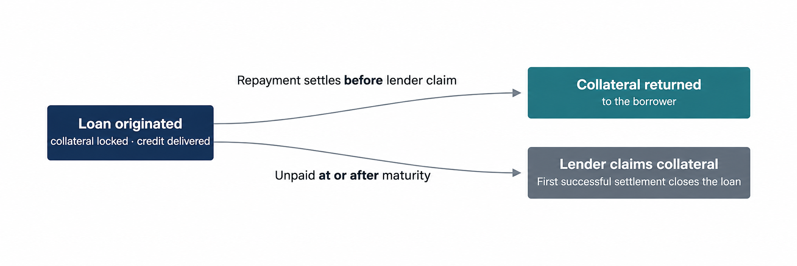
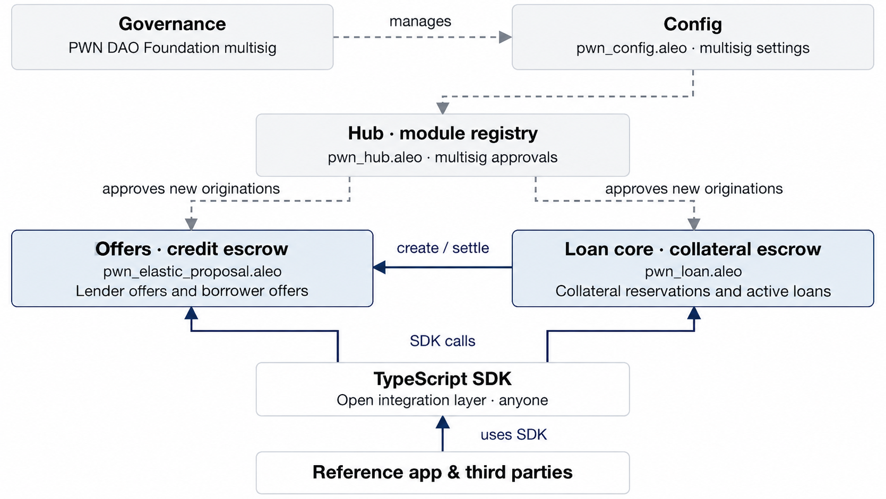
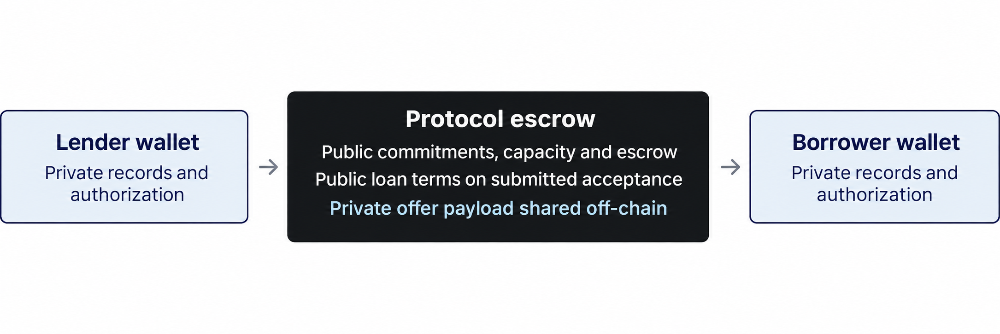

PWN DAO Foundation · Aleo SCALE grant programme · 2 November 2026
Grant request | Delivery period | Main deliverables |
$85,000 | 17 weeks from project start | Aleo programs, TypeScript SDK, reference app, external audit and mainnet launch |
We are building universal, private peer-to-peer lending and borrowing infrastructure for Aleo. Lenders and borrowers can post offers, each allowing multiple fills, with public or private visibility independent of offer direction. Loans have fixed rates and terms, starting with ALEO collateral and USDCx credit; pALEO and stALEO are follow-on integrations. The design keeps participant addresses out of direct public lending fields, subject to the privacy boundaries below. The grant takes our working proof of concept to an audited mainnet launch, with open-source Leo programs, a TypeScript SDK that any wallet or app can integrate, and a reference app.
How it works. In the funded baseline, a lender escrows credit or a borrower escrows collateral when posting an offer. The taker supplies the other asset at acceptance. Each fill creates an independent loan with its own fixed APR, duration, principal, collateral and lender repayment rights. The borrower may repay before or after maturity until a lender claim settles. The lender may claim at or after maturity; the first successful settlement wins. There are no price oracles and no price-triggered liquidations.
Privacy. Aleo’s private records and private authorization reduce direct public links between participants and positions. Public offers advertise terms; private offer payloads are shared off-chain with one designated counterparty, who may fill repeatedly. Commitments and necessary escrow metadata remain visible, and submitted loan economics are public even when acceptance is rejected. Counterparties know necessary payout details, and amount/timing correlation remains possible. Per-loan selective disclosure, encrypted recovery and private-fee wallet UX are grant deliverables.
Grant scope. A full review and production rework of the PoC’s Leo programs, lender and borrower offers in public and private modes, live USDCx integration, the SDK, the reference application, an external security audit and mainnet launch. Everything is released as open-source software under GPL-3.0. The optional funding-at-acceptance prototype is assessed separately from the funded baseline.
Why. Aleo’s private assets create an opportunity for credit that does not publish direct wallet-to-position relationships. Stablecoin holders using USDCx and USAD could fund loans for a fixed-term return. Holders of ALEO, liquid-staking tokens such as pALEO and stALEO, and other supported assets could raise liquidity without selling or unstaking. On public lending systems, positions can reveal borrowing needs, treasury moves, counterparties and liquidation levels. This design removes price-triggered liquidation and reduces direct address disclosure; it does not hide submitted loan economics or eliminate correlation. Demand will be tested with pilot lenders, borrowers and completed loans.
Impact for Aleo. Stablecoin holders gain a fixed-rate lending use, ALEO holders can obtain liquidity without selling, and follow-on pALEO or stALEO integrations could let borrowers retain staking exposure. It is built as an open base layer: new offer types plug in as modules, any wallet or app can embed lending through the SDK, and teams can extend the open-source programs or deploy their own markets.
PWN DAO Foundation has built crypto lending infrastructure for over 5 years. Its peer-to-peer lending protocol, PWN, is deployed on 13 EVM mainnets. It has processed more than $10m in loan volume for over 5,000 users. The same team builds OWN, crypto-backed mortgage infrastructure running on PWN's lending primitives.
Josef Jelacic: Founder of PWN DAO and OWN; previously at the Ethereum Foundation. Project role: protocol architecture and design oversight. LinkedIn.
Šimon Kozák: Founding Engineer and CTO at PWN DAO and OWN. Project role: protocol and application development. LinkedIn · GitHub.
Jan Mikšík: Engineer with four years of experience building DeFi lending applications. Project role: protocol and application development. LinkedIn · GitHub.
Šimon and Jan will jointly deliver the Leo programs, TypeScript SDK and reference application.
Private stablecoins are live on Aleo: USDCx is backed by USDC in Circle xReserve, and USAD is issued by Paxos Labs and backed by USDG. At 14:15:32 UTC on 2 November 2026, their combined on-chain supply was approximately $4.71m at peg (USDCx 4,258,945.404803; USAD 447,680.320648). USDCx state · USAD state. This measures asset supply, not committed lending liquidity or demonstrated demand.
Trading and liquid staking provide adjacent infrastructure for a lending market. Shield Swap is a potential venue for price discovery and exit liquidity, while Pondo and Beta Staking provide liquid-staking integration targets. The existence of swap and staking products does not establish lending demand; the pilot will validate available liquidity, usable collateral and willingness to borrow or lend.
Asset | Availability and evidence (2 Nov 2026) | Example Role |
ALEO (native) | Native credits.aleo; initial collateral integration. Staked ALEO needs an LST integration or a later native-staking module. | First collateral asset |
USDCx / USAD | USDCx 4,258,945.404803; USAD 447,680.320648 tokens at the 2 Nov 2026 snapshot; approximately $4.71m combined at peg. | USDCx first production credit asset; USAD follow-on integration |
Pondo liquid-staking token; integration and current liquidity validation required. | Follow-on collateral | |
Beta Staking liquid-staking token; integration and current reserve/withdrawal validation required. | Follow-on collateral | |
ETH, wBTC, SOL on Aleo | Prospective bridged-token collateral; verify supported token behavior, bridge/issuer risks and liquidity with Shield Swap and the relevant issuers. | Follow-on collateral |
Integration target | Planned integration — targets, not confirmed partnerships |
Circle (USDCx), Paxos (USAD) | USDCx first production credit asset; USAD follow-on, subject to live issuer and wallet integration validation |
Provable: Shield wallet, Shield Swap, delegated proving | Wallet integration for the reference app; Swap pools as potential price reference and exit liquidity; delegated proving with explicit disclosure of inputs visible to the prover |
Pondo, Beta Staking | pALEO and stALEO as collateral, giving liquid-staking tokens new utility |
Request Finance, Toku, Zebec, Bitwave, Utila | Treasury yield and embedded credit through the SDK |
zPass, ANS (future) | Identity-gated private offers and readable counterparty names |
Everstake and validators (future) | Native staking positions as collateral |
Each loan fixes its credit asset, collateral asset, principal, collateral requirement, APR, duration and repayment rule at origination. Repayment returns collateral to the borrower and allocates the repayment to that loan’s lender. Repayment remains possible after maturity until a lender claim settles. The lender may claim at or after maturity, and the first successful repayment or claim prevents the other settlement. Maturity does not transfer collateral automatically.

The baseline is a funded offer inspired by the Elastic Proposal model. A lender escrows credit with fill limits, an asset pair, a fixed collateral ratio, a duration and an offer expiry; a borrower instead escrows collateral and offers borrowing terms to lenders. The taker supplies the complementary asset at acceptance. Both directions allow multiple fills, each creating a separate loan with independent collateral, maturity and lender repayment rights. Repayments on borrower offers belong to the matched lender, not the offer maker. Expiry stops new fills. Cancellation refunds unused escrow only, leaving active loans intact. Capacity is non-revolving: repayments and returned collateral do not replenish it.
Lenders and borrowers propose the collateral ratio and terms, and acceptance fixes them for each loan. Lenders take collateral-price risk in exchange for the agreed return; loans cannot be liquidated by price moves or oracle manipulation.
Private offers use the same funded model in either direction, with acceptance restricted to one designated counterparty through private authorization. That counterparty may fill repeatedly. Public offers may serve different takers. Visibility is independent of direction; private offer payloads are shared off-chain rather than listed publicly.
Optional funding at acceptance. A separate public-USDCx allowance prototype locally demonstrated atomic credit transfer plus borrower-owned private native collateral at acceptance. Posting and approval move no principal or collateral, although transaction fees still apply. Revoked allowance or insufficient balance rolls the acceptance back. The lender address and funding amount are public, and balances are unreserved. Native private collateral still needs borrower authorization at final execution: one ordinary execution cannot combine independently owned private records from two separate signers. The probe’s refund is test cleanup, not loan settlement. Wallet integration, live-issuer behavior and proof-enabled public-network production validation remain M1 work. Local feasibility evidence.

Layer | Responsibility | Authority boundary |
Hub and Config | Module authorization, zero protocol fee and a stop for new originations. No administrative asset allowlist. | Foundation multisig manages module authorization; administration cannot block or redirect settlement of existing positions. |
Proposal program | Holds lender credit escrow, enforces fill limits, refunds unused credit and allocates per-loan repayments; coordinates borrower reservations with the loan core. | The maker controls unused escrow; each matched lender owns its loan’s repayment rights. Cancellation cannot reclaim active-loan collateral. |
Loan core | Holds pending borrower collateral and active loan collateral; enforces repayment, maturity and one-time settlement. | Loan terms are fixed at origination. |
Token programs | Native and private token transfers and program-held public balances. | Issuer powers (burn, freeze, pause, upgrade) stay with the token issuer. |
SDK and applications | Wallet connection, proof and record handling, public discovery, private-offer delivery/import, recovery and user journeys. | Public state determines settlement. Private and public-borrower acceptances also require the shared opening and payout data. |
Baseline escrow uses program-controlled public balances, with user withdrawals delivered as private records. Programs never hold spendable private records. Exact token descriptors, isolated accounting and exact transfer-delta checks bind asset movement to accounting; there is no asset-admission gate. Offer types are separate proposal modules authorized through the Hub, so new types can be added without changing the loan core. The production core will be audited before immutable deployment.
The SDK will read public offers, available capacity, loan terms and status from Aleo state for the reference app and third-party applications. An optional indexer can speed up public offer search; the SDK verifies terms and status against chain state. Private offers require an off-chain payload verified against the on-chain commitment. Public borrower offers also require an opening containing payout details; once shared, the maker can be offline. Encrypted delivery, import, private-record backup and recovery of per-position authorization data are SDK grant deliverables, not completed PoC features.
The first production pair is ALEO collateral against USDCx credit. The PoC covers native ALEO, ARC-20 and USDCx/USAD compliant-token profiles using pinned local fixtures. pALEO and stALEO follow as additional integrations. There is no administrative asset-admission list: compatibility requires exact supported token descriptors, isolated accounting and exact transfer-delta checks. Issuer freeze, burn, pause and upgrade powers remain risks. M1 defines the token-deficit policy and validates live issuer behavior before real deposits. NFTs, rebasing and fee-on-transfer tokens are outside V1.
V1 aims to minimize direct public links between wallet addresses and loan positions using Aleo’s record, authorization and fee mechanisms. The funded baseline and optional public-allowance prototype have different privacy boundaries; private payload delivery does not hide a public funding trail.

Data | Visibility in V1 |
Participant addresses | Private inputs, records and salted authorization avoid direct wallet addresses in public lending fields. Counterparties receive necessary payout information. Private fees on every path, without silent public fallback, are a wallet/SDK deliverable. |
Balances and position ownership | User-held records and authorization data are private; program escrow balances are public. Encrypted backup/recovery and user-controlled per-loan disclosure remain grant deliverables. |
Public/private offers and submitted loan economics | Public offers advertise terms. Private payloads are shared off-chain; commitments, expiry, status, necessary capacity and escrow asset/amount may remain visible. Submitted loan economics are public, including rejected acceptance. Public borrower offers require off-chain opening/payout data. |
USDCx compliance data | The issuer’s designated compliance observer receives transfer data. This does not hide public loan economics. Delegated provers also see the inputs entrusted to them and must be treated as a separate privacy boundary. |
Timing and amount correlation | Remains possible across public escrow, amounts, timing and counterparty knowledge. SDK defaults and user guidance can reduce avoidable leakage but cannot guarantee unlinkability. |
Implementation priorities: private fees on every lending path, including rejected transactions, with no silent fallback to a public fee; fresh salts per commitment and loan; encrypted offer delivery/import and position backup/recovery; and selective disclosure scoped to a single loan. These are SDK and application deliverables. M1 also assesses moving remaining public witness fields into private inputs bound to blinded commitments, without representing that future work as present PoC privacy.
Privacy references: PoC disclosure matrix; Aleo records and scoped view keys; delegated proving; stablecoin compliance visibility.
Implementation | Demonstrated scope | Next step |
Public-testnet predecessor | Four single-pair programs using native ALEO credit and live token-registry collateral; funding, draw, repayment, default claim, refund and withdrawal executed with real proofs. | Public-testnet validation of the multi-token design and live USDCx lifecycle. |
Current multi-token PoC | Local tests across native ALEO, ARC-20 and USDCx/USAD profiles cover both offer directions, repeated fills, accounting, adversarial and arithmetic cases. Selected executions generate real proofs; the devnode does not verify proofs, deployment certificates or consensus. | Proof-enabled public-network tests, wallet integration and live compliance validation. |
Production target | Grant deliverable: audited immutable core, lender/borrower offers in public/private modes, production SDK and reference app. No mainnet deployment or funding has been performed. | Replace the PoC's timelocked upgrades with immutable deployment after audit. |
V1 delivers bilateral collateralized loans with fixed terms and zero protocol fees. Because offer types are modules, we or other teams can later add installments, refinancing, crowdfunded loans, borrower and lender hooks, identity-gated direct offers using zPass, and native staking positions as collateral, with reward accounting and unbonding handled by a dedicated module.
Design references: PWN protocol architecture; PWN Elastic Proposal semantics; Provable compliant stablecoin programs; PoC interface decisions; PoC security status.
The request is $85,000 over 17 weeks from the agreed project start. It funds a full review and production rework of the PoC, the remaining lending features, live token integrations, the SDK, the reference application, testing and an independent security audit. Each milestone is verified by published code, test results and deployment evidence.
Milestone | Target completion | Amount | Deliverable |
M1 · Core and interfaces | Week 7 | $35,000 | Production candidate, both offer directions and visibility modes, live USDCx validation, tests and threat model |
M2 · SDK and on-chain offer discovery | Week 10 | $15,000 | TypeScript SDK, public discovery, encrypted private-offer delivery/import and position recovery |
M3 · Reference application | Week 13 | $15,000 | Lender and borrower journeys, selective disclosure and external testing |
M4 · Audit and launch | Week 17 | $20,000 | External audit, remediation, retesting, immutable deployment and end-to-end mainnet loan |
Total | 17 weeks | $85,000 |
Scope. Review all PoC programs and rework their architecture, interfaces and implementation for production. Complete lender and borrower offers in public and private modes, production Hub/Config behavior, live USDCx integration, the disclosure specification and custody/settlement interfaces. Retain module authorization, exact token descriptors, isolated accounting and transfer-delta checks without asset admission. Define the issuer-risk and token-deficit policy. Extend tests with proof-enabled public-testnet coverage, adversarial scenarios, property testing and fuzzing. Publish invariants, a threat model and the optional funding-at-acceptance feasibility result, including wallet and live-issuer constraints.
Acceptance. On public testnet, demonstrate multiple fills in both offer directions: public offers can serve different takers, and private offers allow repeated fills by one designated counterparty while rejecting unauthorized acceptance. Verify each borrower-offer lender’s repayment rights, independent loan maturity/collateral and non-revolving capacity. Tests cover expiry, cancellation of unused escrow, overdraw, premature claims, repayment before and after maturity until claim settlement, first-successful-settlement behavior, double settlement, replay, administration changes and token-specific failures. A live USDCx loan runs through funding, acceptance and repayment, with compliance outputs documented. Publish the privacy review, including rejected transactions, and freeze the core for external audit.
If a material external dependency blocks delivery, we agree a revised scope and schedule with Aleo.
Scope. A TypeScript SDK for publishing and accepting lender/borrower offers, public offer discovery, reading capacity and loan state, and executing funding, repayment, default claims, cancellation and withdrawals. Include encrypted private-offer delivery/import, commitment verification, public-borrower opening/payout handling, private records and fees, USDCx proof preparation, and user-controlled position backup and recovery.
Acceptance. Publish the SDK and integration documentation. Run the full lifecycle against the testnet deployment without a proprietary backend, using shared payloads where required. Verify private-offer openings against commitments and demonstrate public-borrower acceptance after its maker goes offline. Show privacy guards for successful and rejected calls, no silent public-fee fallback, recovery from a backup, and actionable errors for stale compliance data, unavailable funds and failed transactions.
Scope. Wallet connection, both offer directions, public publishing/browsing, encrypted private-offer sharing and acceptance, fills, repayment, default claims, position overview and selective disclosure of a loan to a chosen party.
Acceptance. External testers complete lender and borrower journeys on testnet without team assistance, including public and private offers and repeated fills. Publish the application and usage documentation, fix blocking usability findings, and demonstrate disclosure of a single loan without sharing an account-wide view key. Tester count, supported wallets and usability criteria are agreed with Aleo before M3 begins.
Scope. Independent audit of the production core and its integration boundaries, remediation and retesting, non-upgradeable mainnet deployment, and SDK package release. Audit preparation starts after the M1 interface freeze.
Acceptance. Publish the audit and remediation status, with material findings resolved before mainnet deposits. Publish program IDs, source and build references, and constructor policies. At least one real mainnet loan with external participants originated, repaid and settled end to end. Publish integration and operational documentation.
Targets for the six months after mainnet launch: